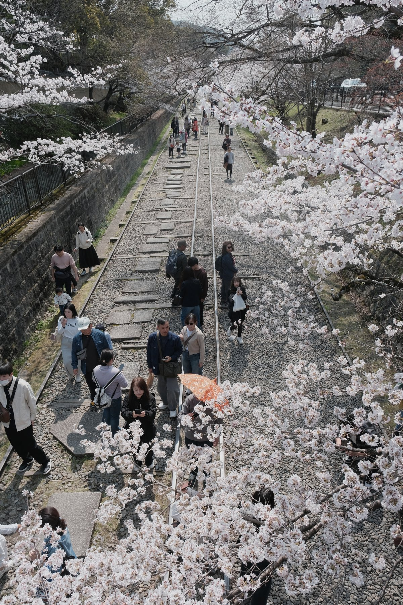
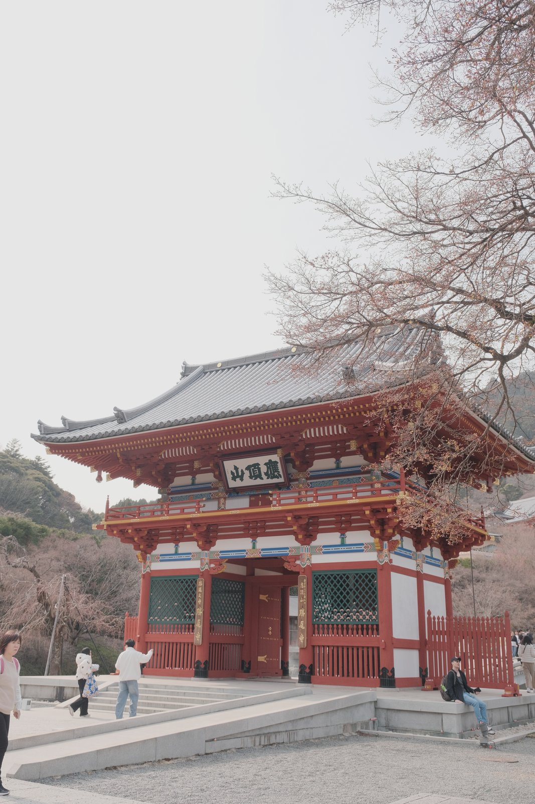
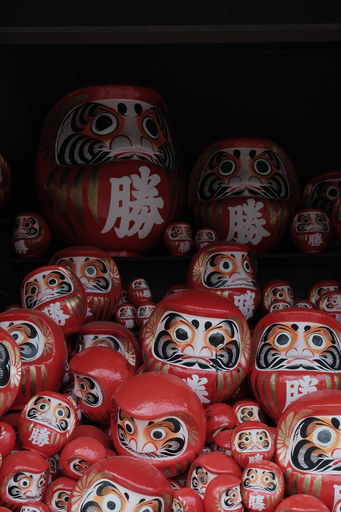
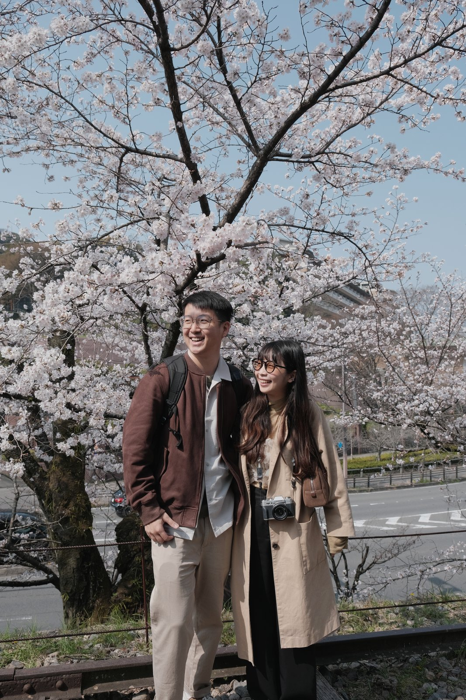
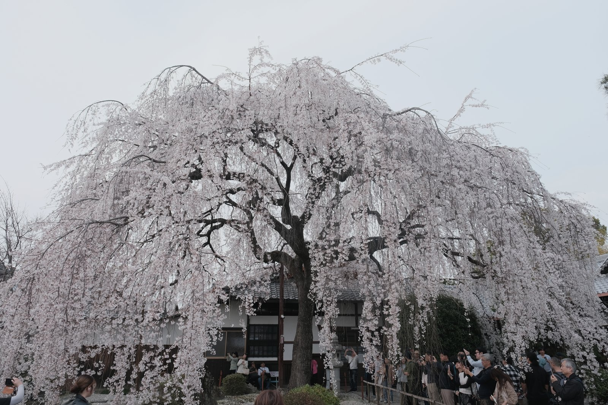
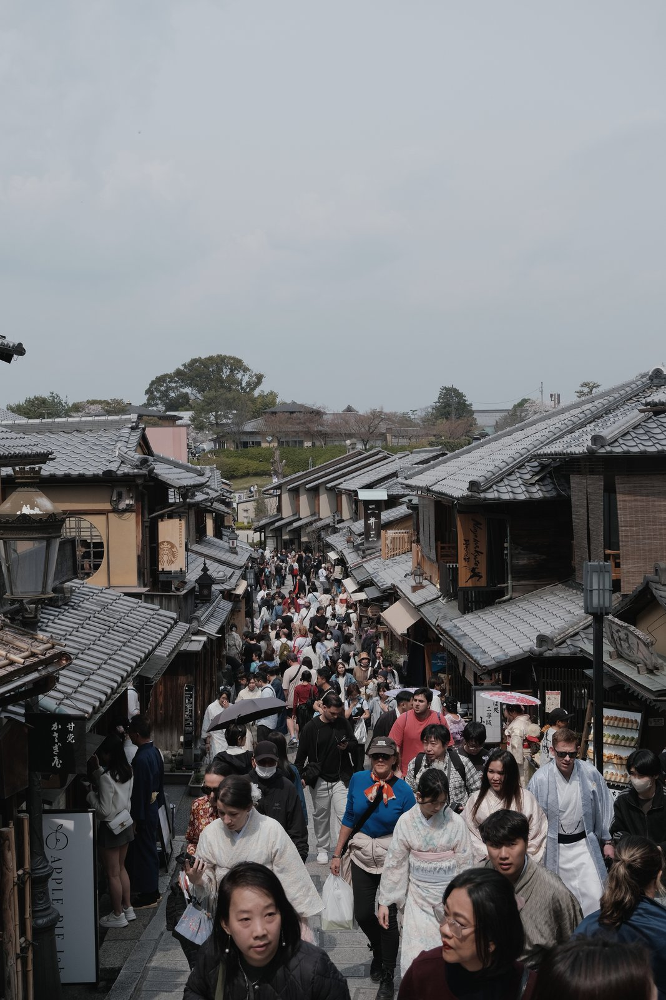

2026 Mar / Japan / #旅途
京阪六日遊
京阪櫻花季真的人很多，但也真的很難不喜歡。每個地方都開得很滿，連人潮都變成春天的一部分。

櫻花和人潮
這趟很多時候都是跟著人潮走。雖然有點累，但看到河道兩旁的櫻花，還是會覺得大家一起來看這件事本身也滿可愛。
神社和街道
京阪很適合把傳統景點和日常排在一起。早上看神社，下午吃甜點，晚上走商店街，行程很滿，但不會覺得太硬。




